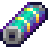

Batterie
| Batterie | |
|  | |
| Voll mit wertvoller Energie aufgeladen. | |
| Information | |
| Quelle | Blitzableiter • Solarpanel • |
| Verkaufspreis | |
Die Batterie kann während eines Gewitters von einem Blitzableiter oder durch ein Solarpanel nach 7 sonnigen Tagen erhalten werden.
Bei einem Gewitter kann ein Blitz in den Blitzableiter einschlagen. Sobald das geschieht, ertönt ein Signal und er fängt an zu pulsieren. Es gibt keine Garantie, dass während eines Gewitters der Blitz in einen Blitzableiter einschlägt. Am nächsten Tag kann die Batterie eingesammelt werden.
Der Reisewagen bietet manchmal eine Batterie für  1.500–2.500 G an. Sie kann bei Robin im Schreinerladen oder in der Versandbox für
1.500–2.500 G an. Sie kann bei Robin im Schreinerladen oder in der Versandbox für  500 G verkauft werden. Sehr selten kann beim Zerstören von Kisten in der Schädelhöhle eine Batterie fallen gelassen werden. Sie können auch von Iridium-Fledermäusen fallen gelassen werden (5% Chance).
Kent und Pam können dem Spieler auch manchmal Batterien per Post zusenden.
500 G verkauft werden. Sehr selten kann beim Zerstören von Kisten in der Schädelhöhle eine Batterie fallen gelassen werden. Sie können auch von Iridium-Fledermäusen fallen gelassen werden (5% Chance).
Kent und Pam können dem Spieler auch manchmal Batterien per Post zusenden.
Drei Batterien werden als Belohnung für das Komplettieren des Kinder Bündels im Gemeinschaftszentrum erhalten.
Herstellung
| Bild | Name | Beschreibung | Zutaten | Rezeptquelle |
|---|---|---|---|---|
| Iridium-Sprinkler | Bewässert jeden Morgen 24 Felder um sich herum. | Hofarbeit Stufe 9 | ||
| Kristallarium | Lege einen Edelstein deiner Wahl hinein und es erstellt Kopien davon. | |||
| Schleim-Eierpresse | Komprimiert 100 Stücke Schleim zu einem Schleim-Ei. Ein Wunder der Wissenschaft! | |||
| Laternenpfahl, Holz | Bietet eine gute Menge Licht. | |||
| Laternenpfahl, Eisen | Bietet eine mäßige Menge Licht. | |||
| Mini-Jukebox | Ermöglicht es dir, deine Lieblingsmusik zu spielen. | |||
| Hof Rechner | Scannt den Hof und zeigt nützliche Informationen an. |
Als Geschenk
| Reaktionen der Dorfbewohner
| |
|---|---|
| Liebt es | |
| Gefällt nicht | |
Bündel
Batterie wird für das  Ingenieur Bündel im Heizraum (Remixed) benötigt.
Ingenieur Bündel im Heizraum (Remixed) benötigt.
Schneiderei
Eine Batterie kann auf der Spule der Nähmaschine genutzt werden, um ein T-Shirt herzustellen.
Aufträge
- Eine Batterie wird für den Auftrag "Der mysteriöse Qi" benötigt.
- Pam sendet am 19. Herbst im zweiten Jahr einen Brief und möchte in der Aufgabe "Pam braucht Saft" eine Batterie haben. Als Belohnung erhält man
 400 G und ein Herz bei Freundschaft.
400 G und ein Herz bei Freundschaft. - Willy's Boot benötigt 5 Batterien, um den Ticketschalter zu reparieren.
Gallerie

Unaufgeladen vs Aufgeladen
Geschichte
- 1.4: Kann jetzt in der Schneiderei verwendet werden. Als Zutat im Rezept der Mini-Jukebox genutzt.
- 1.5: Wird jetzt in einem Remixed Bündel benötigt. Als Zutat im Rezept vom Hof Rechner genutzt. 5 werden jetzt für die Reparatur von Willy's Boot benötigt. Kann durch das Solarpanel erhalten werden.
| Ressourcen | |
|---|---|
| Grundlagen | Batterie • Fasern • Hartholz • Holz • Knochenfragment • Kohle • Lehm • Schlackenscherbe • Stein |
| Erz | Kupfererz • Eisenerz • Golderz • Iridiumerz • Radioaktives Erz |
| Barren | Kupferbarren • Eisenbarren • Goldbarren • Iridiumbarren • Radioaktiver Barren • Verfeinerter Quarz |